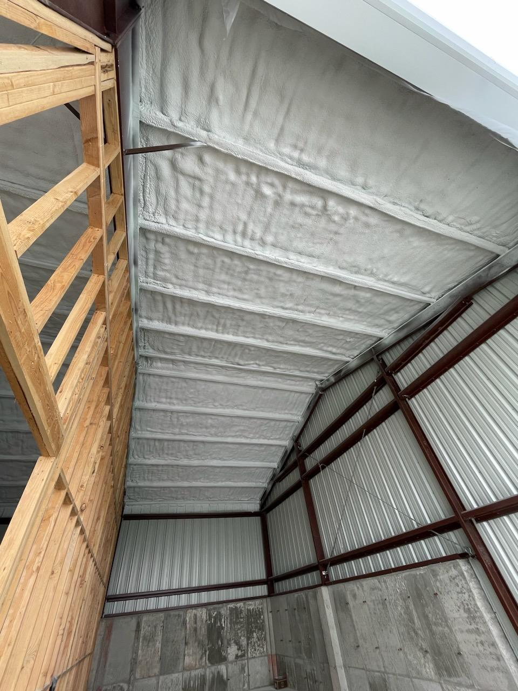

Soundproofing insulation that actually quiets a room
Dense mineral wool and high-density fiberglass batts absorb sound energy inside a wall, floor, or ceiling cavity, cutting down noise between rooms, floors, or from the outside.
Get a Free QuoteHow sound insulation is different
Standard insulation is chosen for its R-value, its resistance to heat flow. Soundproofing insulation is chosen for how well it absorbs sound energy and interrupts vibration, which is a different property entirely. Dense mineral wool (rock wool) batts and high-density fiberglass are the two most common materials, both installed inside the wall, floor, or ceiling cavity between two spaces.
Insulation alone reduces airborne noise (voices, TV, music) passing through a cavity, but it doesn't stop impact noise (footsteps, dropped objects) traveling through the structure itself. For a noticeable difference on impact noise, we'll often pair dense insulation with resilient channel or sound-dampening drywall, which decouples the wall or ceiling surface from the framing so vibration has a harder time crossing through.
We start by figuring out what kind of noise is actually the problem, airborne, impact, or both, since that determines whether insulation alone will make a real difference or whether it needs to be part of a larger assembly.
Why homeowners choose it

Dense insulation installed between framing to dampen sound transfer.
Common rooms where this makes a difference
Soundproofing insulation is most worth it in spaces where quiet actually matters day to day:
Soundproofing insulation FAQ
Does insulation actually help with soundproofing?
What is the best insulation for soundproofing?
Where is soundproofing insulation usually installed?
Will soundproofing insulation block all noise?
Do you offer free soundproofing insulation estimates?
Dealing with noise between rooms or floors?
Tell us what you're hearing and where. We'll recommend the right combination of materials for your space.
Get a Free Quote